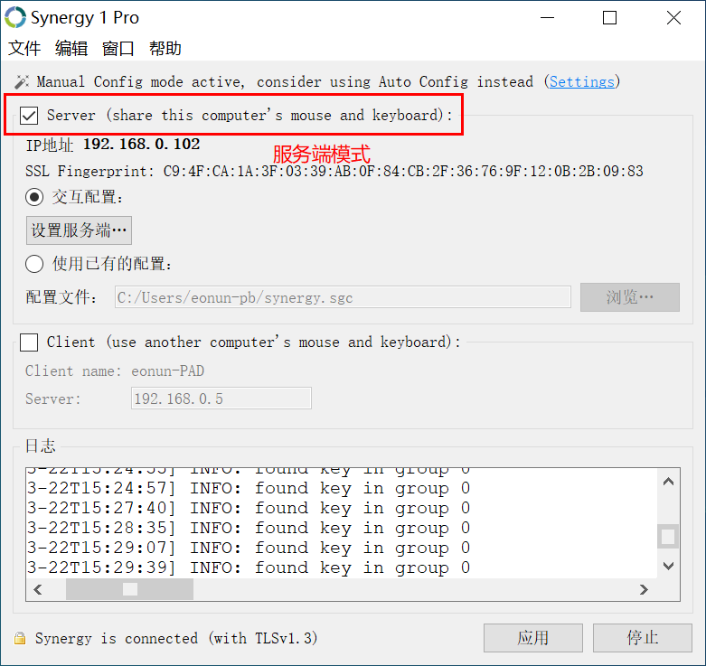
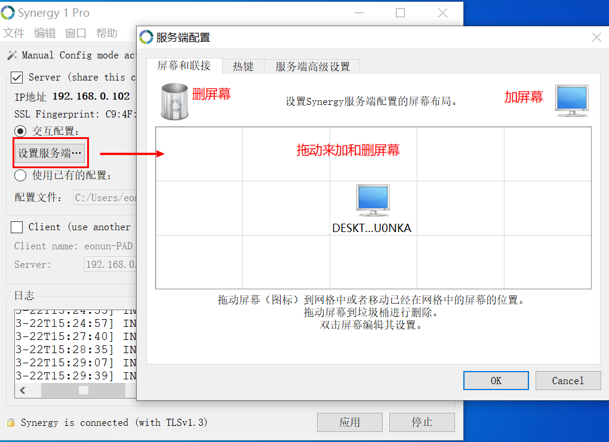
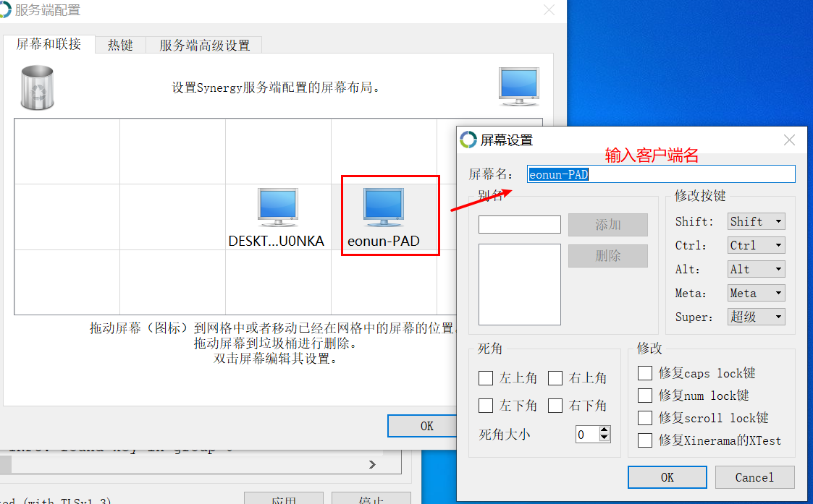
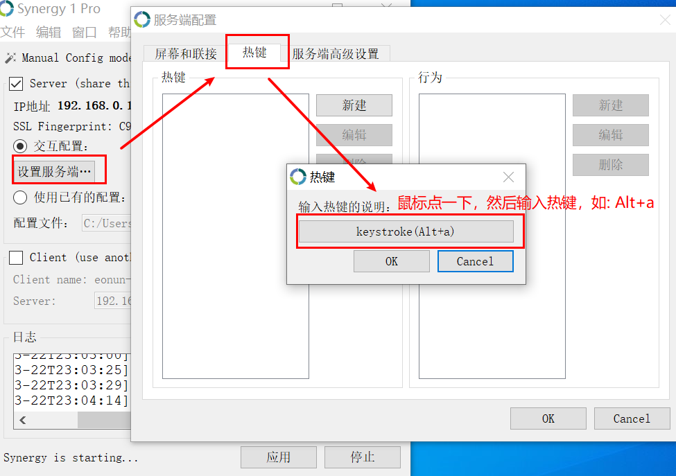
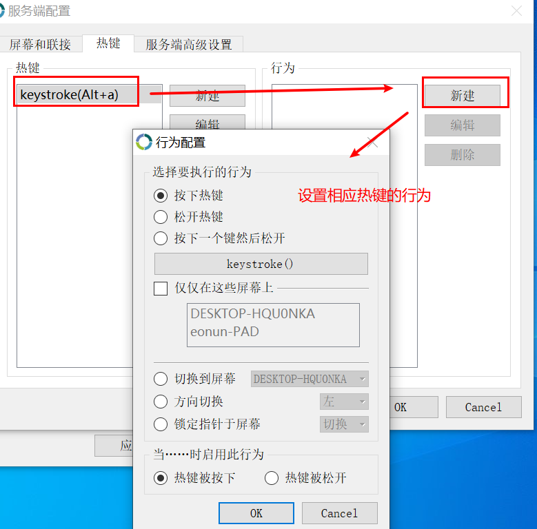
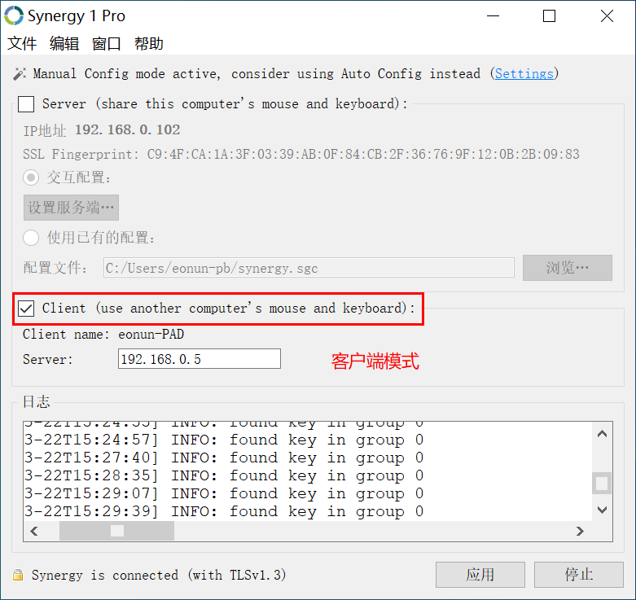
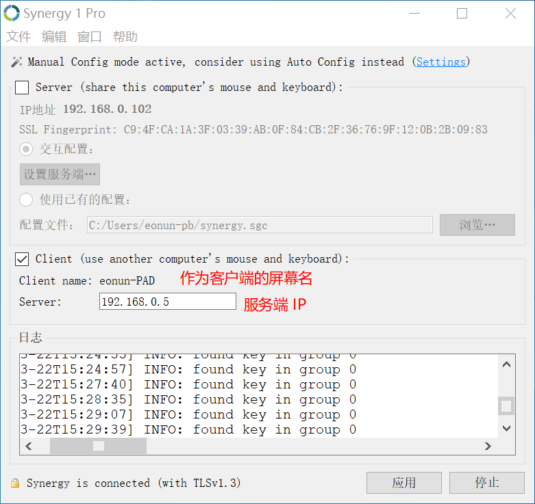
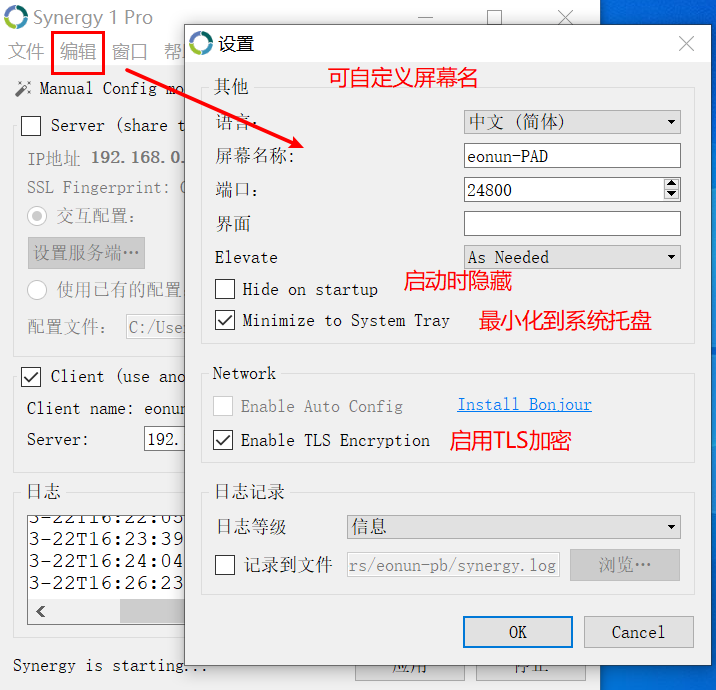

安装
Windows 安装包在官网下载是需要付费后才能下载的，可自行编译 获得安装包,百度网盘有1.10的安装包
部分Windows系统没有运行库安装时会提示没权限开启服务，需要装上运行库才能运行
archlinux了直接通过sudo pacman -S community/synergy安装
Synergy 第三方编译版下载
不担心安全问题的的话可以试一试第三方编译版
共享鼠标键盘神器：Synergy 破解
修改破解
原理：修改配置中edition的默认值由3改为1.
Windows
修改注册表：synergy.reg
1 | [HKEY_CURRENT_USER\Software\Synergy\Synergy] |
Linux & mac
~/.config/Synergy/Synergy.conf
1 | [General] |
Windows：v1.8.4、v1.8.8；Linux：v1.10.1可用
参考： https://www.jianshu.com/p/42f28d1b5daa
序列号
7B76313B70726F3BE5BDAC20E585B33B313B7A7A39323735313040676D61696C2E636F6D3B3B3B7D
使用
服务端(键鼠控制端)
勾选服务端模式

设置服务端 > 通过拖动右上角的图标添加屏幕,也可将已有的拖到左上角删除

双击已有的屏幕,编辑屏幕名 ,也可进行其他配置， 不编辑屏幕名将被拒绝连接

可在热键设置中添加热键

设置热键行为

客户端(被控制端)
勾选客户端模式

在客户端模式下需要 填写服务端IP,并需要向服务端提供屏幕名

客户端可自定义屏幕名

最后点击右下角的应用然后点开始即可使用了，窗口最小化时将其放到系统托盘，关闭窗口可后台运行（剪切板不共享）
Synergy 项目 fork 出来的免费版本
Synergy 是开源收费的，可自己编译免费版使用,官网下载收费
有大神从 Synergy 项目 fork 出一个免费版 Barrier 可在 Widnows 、Mac OS 、Linux 使用